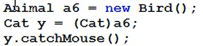

多态续：
向下转型（加强制类型转换符）
什么时候必须向下转型？
需要父类访问子类中特有的方法，
向下转型的风险：
参考代码：

编译阶段：Cat和Animal存在继承关系，可以向下转型，编译通过。
运行阶段: 堆内存实际创建的是：Bird对象，将Bird转成Cat，因为没有继承关系，运行出错。出现异常：Java.Lang.ClassCastException(类型转换异常)
//Java.Lang.NullPointerException(空指针异常)；
怎么避免 Java.Lang.ClassCastException异常？
运算符：
instanceof
第一：instanceof可以在运行阶段动态判断引用指向对象的类型。
第二：instanceof的语法： （ 引用 instanceof 类型）
第三：instanceof运算符的运算结果只能是：true/false
第四：若（c instanceof Cat）为true表示：c引用指向堆内存的对象是Cat。
经测试：
（子类引用 instanceof 父亲类型）结果为true
（父类引用 instanceof 子类型）结果为false
若为flase，则c引用指向对内存中的对象不是Cat。

任何时候，Java规范中要求，向下转型都需要用instanceof判断。
向下转型是在向上转型的基础上。Animal a=new Cat();是向上转型。
Cat c=new Animal();是错误的语句，不能这样用。
Animal a=new Cat();
if(a instanceof Cat)
Cat b=(Cat) a;//是向下转型
修饰符列表 返回值 方法名(Animal a){
if(a instanceof Cat){
Cat c=(Cat) a;//是向下转型
c.Cat类中的方法;
}
if(a instanceof Bird){
Bird b=(Bird)a;//是向下转型}
b.Bird类中的方法；
}
//软件在扩展中，修改的越少越好。
七大软件开发原则：
多态在开发中有什么作用？
降低程序的耦合度，提高程序的扩展力。
设置形式参数为父类对象，通过向上转型，只需要新添的类继承该父类，覆盖父类的方法，不需要修改原先代码。
面向父类型编程，面向抽象编程，不建议面向具体编程。
提高代码扩展性，符合软件开发七大原则中的OCP，对修改关闭，对扩展开放。
开发软件，不仅要实现当前需求，还要考虑软件的扩展性。
父类中的变量无法被子类覆盖或重写

可以通过成员方法得到成员变量的信息，

结论：对成员变量要进行封装，向上转型通过成员方法来获取成员变量，不封装的话，父类引用所调用的成员方法可能不是预期值。
方法覆盖必须和多态机制联合起来使用才有意义，方法覆盖针对的是实例方法。
多态和对象有关，静态方法不需要对象，所以，静态方法覆盖没有意义。
总结：
私有方法不能覆盖，
静态方法不谈覆盖。
关于方法覆盖中的返回值类型：

super关键字：


this()和Super()不能在一个构造方法中共存，都只能出现在构造方法第一行。
父类的构造方法一定会执行。没有手动调用父类构造方法，默认在第一行有super（）；// 默认执行父类无参构造方法

public static void main(String[] args){
new c:
}
执行结果：
1-3-6-5-4
在Java语言中，任何程序，最后Object类的无参构造方法一定会执行。Object类的无参构造方法处于“栈顶部”。
栈顶特点，最后调用，最先执行。